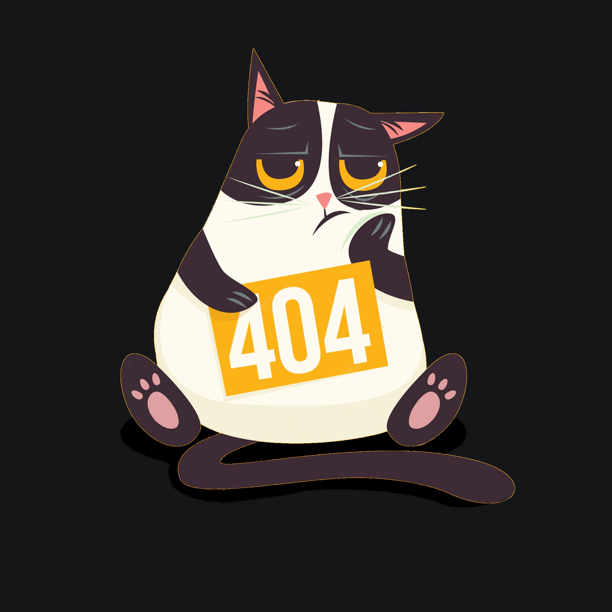

<div class="mb-4 goBack">
    <div class="searchButton toolbar">
        <div class=" searchbox input-group input-group-lg" (click)="navigate()">
            <div class="searchbox__input form-control bg-dark" aria-label="Large"
                aria-describedby="inputGroup-sizing-sm">
            </div>
            
        </div>
    </div>
</div>

<div class="container cat">
    
</div>